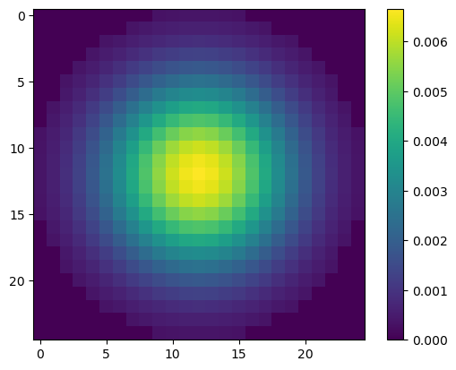
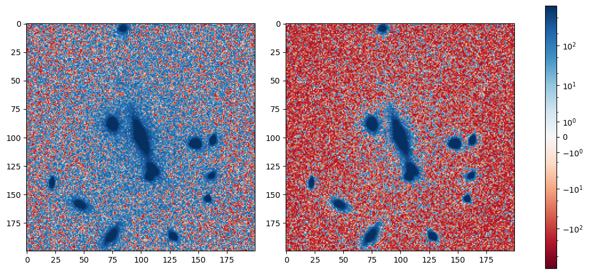
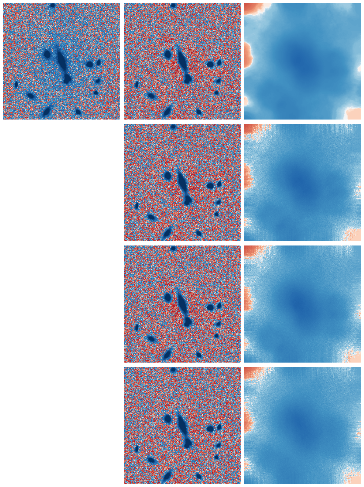
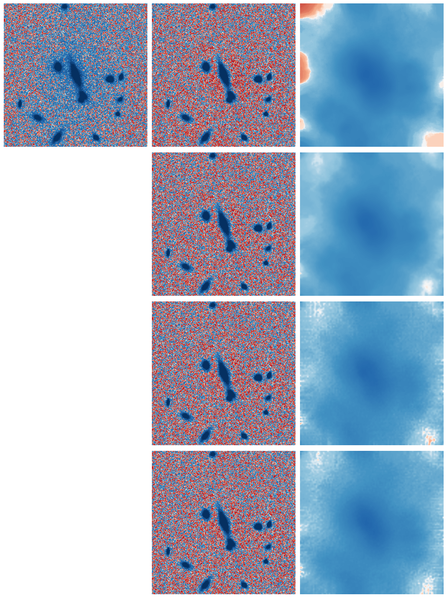
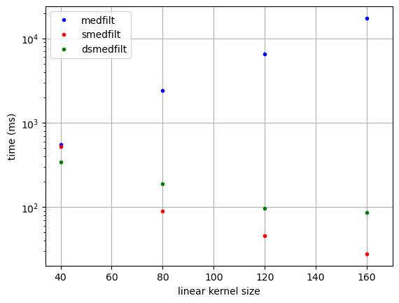
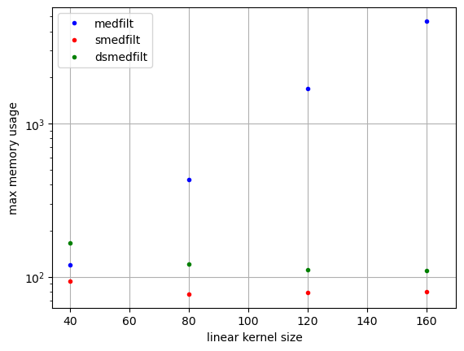
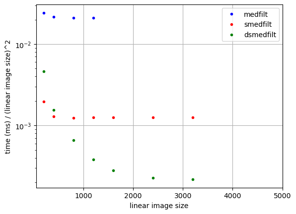
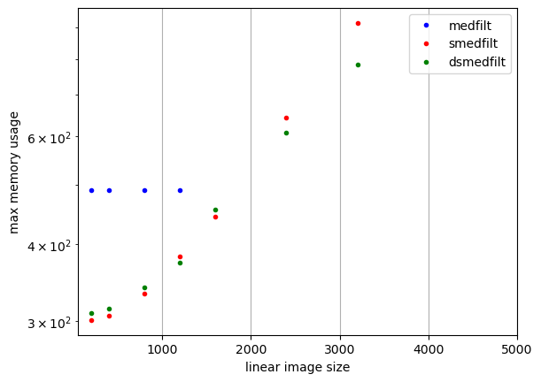
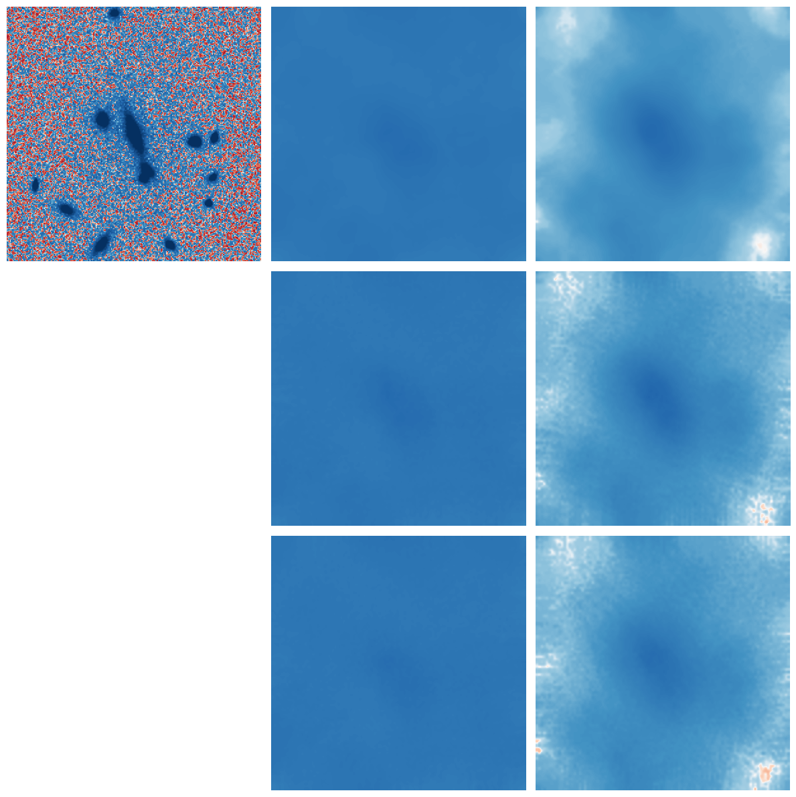

w = filter_weights(25, sigma=5)
plt.imshow(w.reshape(25, 25), cmap="viridis")
plt.colorbar();
Median filtering is a useful tool for estimating the background behind sources. However, (1) it is very slow for large windows, (2) the default windows are square, (3) the window is treated ‘uniformly’. The sampled_median_filter solves each of these issues by (1) initially down-sampling the image, by taking the median on a coarse grid, (2) calculate the subsequent median filter by randomly sampling a fixed number of pixels within the window, (3) selecting the pixels within a circular aperture, (4) optionally weighting by a Gaussian profile such that pixels in the centre are more likely to be sampled, and (5) allowing the use of dask to improve computational efficiency.
First we define a function to calculate the weights with which pixels will be sampled.
Weights for a circular filter of diameter size.
If sigma is not None, then this is a 2D Gaussian profile, otherwise it is a tophat. In either case the filter is cutoff at a diameter of size.
The generated kernel is normalized so that it integrates to 1 and returned as a flat array.
Let’s check an example kernel.

def sampled_median_filter(
data:numpy.ndarray | xarray.core.dataarray.DataArray, # the 2D array of data to filter
size:int, # diameter of the filter kernel
nsample:int | None=None, # the number of samples in the sparse median filter
gaussian_sigma:float | None=None, # optional Gaussian standard deviation
coarse_factor:int | None=None,
coarse_samples:int=25, # the sampling rate for the coarsened image, if `coarse_factor=None`
mode:str='nearest', # the mode passed to the median filter
mask:numpy.ndarray | None=None, # optional 2D mask to apply to `data`
allow_nans:bool=True, # ignore NaNs in `data`
return_mad:bool=False, # additionally return the MAD
keep_coarse:bool=False, # if True, return the coarsened image
dims:NoneType=None, # if data is a DataArray, the dimensions to which to apply the filter
verbose:bool=True
)->numpy.ndarray | xarray.core.dataarray.DataArray: # the filtered data
Perform median filtering in an efficient, but reduced accuracy, method.
For large kernels, the image is first ‘coarsened’, by calculating the median in square blocks of pixels. The resulting image is then median filtered using a circular footprint, which may optionally be randomly-sampled and centrally weighted by taking the sampling probablity as a Gaussian distribution.
If data is a dask-backed xarray.DataArray, then the filtering is performed using dask, and the returned object is an xarray.DataArray, with lazy computation. Otherwise, numpy is used and the returned object is a numpy.ndarray.
If gaussian_sigma is specified, the samples are weighted by a Gaussian profile, otherwise the filter is a tophat. When using a Gaussian profile, the number of samples, nsample, defaults to 10 * size, clipped to a minimum of 100 and a maximum of size**2. Otherwise, is nsample is not specifed, the entire tophat is used, without random sampling.
If the coarse_factor is not specified, it is chosen such that the kernel size or 6 times the gaussian_sigma, whichever is smaller, is sampled by at least coarse_samples coarsened pixels.
Where mask is True, data is ignored. Specifying a mask implies allow_nans = True.
If allow_nans is False, then NaNs in data are propagated, otherwise they are ignored; for efficiency, this is achieved by setting them to infinity with a checkerboard sign pattern.
If dims is provided, the filtering is performed on the specified dimensions, otherwise the filtering is performed on all dimensions.
Optionally also return the median-absolute-deviation (MAD), scaled to match the standard deviation for Gaussian noise.
The rest of this notebook compares the performance of this method to some alternatives.
Using a random simulated image of some galaxies on top of an extended diffuse component, which we want to remove via a relatively simple method.
This image is a bit small to demonstrate the considerable speed-ups available using sampled_median_filter.
Subtract off the minimum, purely to make visualisations clearer.
Set the plot style to emphasise the background. A level of zero appears as white.
On the left is the original image and on the right we have removed a flat background as a baseline for comparison against other methods. The background is ~16 in the corners and reaches ~100 around the central galaxies.

Now for something else very simple, a Gaussian filter, with a sigma slightly larger than the typical galaxy size. This overestimates the background near the galaxies. On the left is the original image.
CPU times: user 10.3 ms, sys: 1.43 ms, total: 11.8 ms
Wall time: 10.7 msTo exclude sources, let’s try a median filter instead. Although there are still features in the background, compared to the above examples it is much closer to zero and flatter away from galaxies. Note that artefacts around the edge of the image are somewhat unavoidable.
CPU times: user 237 ms, sys: 2.87 ms, total: 240 ms
Wall time: 240 msTry a median filter with a slightly larger size. Residuals are decreased in some places and increased in others, but still not bad. This takes about 0.6 seconds for a 200x200 image and a 50x50 pixel filter, but the time increases rapidly for a larger image or filter (see below).
CPU times: user 911 ms, sys: 18.4 ms, total: 929 ms
Wall time: 928 msWe can do a bit better by masking the bright parts of galaxies before median filtering. However, this requires a slightly different filter implementation, which is slower (now over 2 seconds).
CPU times: user 2.8 s, sys: 26.5 ms, total: 2.82 s
Wall time: 2.83 sUsing square median filters produces horizontal and vertical “streaks”. Let’s switch to calculating the median inside a circular footprint. We save a little time as the footprint is now smaller.
CPU times: user 721 ms, sys: 14 ms, total: 735 ms
Wall time: 735 msLet’s try to speed up the filtering. Instead of taking a median of all the points, we can sample random pixels from the size of the filter footprint and calculate the median of that. This random sampling also reduces the presence of artefacts in the background subtracted image. We can slightly improve on this by optionally weighting the samples so they follow a circular Gaussian distribution. A reasonable choice for the number of samples is 10 times the linear size of the filter. For this many samples the sampled version is similar to the full version. On this example the filtering runs 3 times faster, but the effect is much more dramatic for larger filters.
CPU times: user 220 ms, sys: 5.57 ms, total: 225 ms
Wall time: 227 msCPU times: user 213 ms, sys: 2.51 ms, total: 215 ms
Wall time: 214 msNote we can also provide a mask.
CPU times: user 242 ms, sys: 3.02 ms, total: 245 ms
Wall time: 244 msThe plot below compares regular median filtering (row 1) to the sampled versions without (row 2) and with (row 3) Gaussian weighting. Row 4 shows the effect of masking versus row 3.
fig, ax = plt.subplots(4, 3, figsize=(12, 16))
[[a.axis("off") for a in aa] for aa in ax]
ax[0, 0].imshow(img, norm=norm)
ax[0, 1].imshow(img - med50filt, norm=norm)
ax[0, 2].imshow(med50filt, norm=norm)
ax[1, 1].imshow(img - smed50filt, norm=norm)
ax[1, 2].imshow(smed50filt, norm=norm)
ax[2, 1].imshow(img - gsmed50filt, norm=norm)
ax[2, 2].imshow(gsmed50filt, norm=norm)
ax[3, 1].imshow(img - masked_gsmed50filt, norm=norm)
ax[3, 2].imshow(masked_gsmed50filt, norm=norm)
plt.tight_layout()
For very large images and large kernels, this approach still takes a long time. We can improve the speed further if we start by downsampling the image by taking the median on a coarse grid, such that there are 25 samples across the kernel size in terms of either the overall box size or 6 times the Gaussian sigma, whichever is smaller.
Not specifying gaussian_sigma or nsamples here disables the sparse sampling. The downsampling alone gives a speed-up by a factor of 13.
CPU times: user 65.6 ms, sys: 2.51 ms, total: 68.1 ms
Wall time: 67.2 msUsing sparse sampling of 10 times the linear size of the coarsened kernel gives a ~35% speedup on top of the downsampling. However, it does mean the edge of the kernel is “feathered”, is is kept by default when a gaussian_sigma is specified (otherwise the Gaussian weighting would do nothing).
CPU times: user 41.2 ms, sys: 2.02 ms, total: 43.2 ms
Wall time: 42 msNote we can also provide a mask.
CPU times: user 42.9 ms, sys: 3.24 ms, total: 46.1 ms
Wall time: 45.5 msThe plot below compares regular median filtering (row 1) to the coarsened and sampled versions without (row 2) and with (row 3) Gaussian weighting.
fig, ax = plt.subplots(4, 3, figsize=(12, 16))
[[a.axis("off") for a in aa] for aa in ax]
ax[0, 0].imshow(img, norm=norm)
ax[0, 1].imshow(img - med50filt, norm=norm)
ax[0, 2].imshow(med50filt, norm=norm)
ax[1, 1].imshow(img - cmed50filt, norm=norm)
ax[1, 2].imshow(cmed50filt, norm=norm)
ax[2, 1].imshow(img - cgsmed50filt, norm=norm)
ax[2, 2].imshow(cgsmed50filt, norm=norm)
ax[3, 1].imshow(img - masked_cgsmed50filt, norm=norm)
ax[3, 2].imshow(masked_cgsmed50filt, norm=norm)
plt.tight_layout()
How does the Source Extractor background algorithm do? Quite well, but a bit blobbier. It is also very fast.
CPU times: user 15.2 ms, sys: 1.5 ms, total: 16.7 ms
Wall time: 15.4 msNow run using dask…
CPU times: user 153 ms, sys: 8.78 ms, total: 162 ms
Wall time: 92.9 msNote we can also provide a mask.
CPU times: user 181 ms, sys: 12.9 ms, total: 194 ms
Wall time: 120 msCheck out the time and memory scaling with kernel size.
sizes = np.array([40, 80, 120, 160])
print("medfilt")
times_medfilt = np.array(
[
timeit(f"median_filter(img, {n}, mode='nearest')", number=1, globals=globals())
for i, n in enumerate(tqdm(sizes))
]
)
mem_medfilt = np.array(
[
max(memory_usage((median_filter, (img, n), dict(mode="nearest"))))
for i, n in enumerate(tqdm(sizes))
]
)
print("smedfilt")
times_smedfilt = np.array(
[
timeit(
f"sampled_median_filter(img, {n})",
number=1,
globals=globals(),
)
for i, n in enumerate(tqdm(sizes))
]
)
mem_smedfilt = np.array(
[
max(memory_usage((sampled_median_filter, (img, n))))
for i, n in enumerate(tqdm(sizes))
]
)
print("dsmedfilt")
times_dsmedfilt = np.array(
[
timeit(
f"sampled_median_filter(dimg, {n}).compute()",
number=1,
globals=globals(),
)
for i, n in enumerate(tqdm(sizes))
]
)
mem_dsmedfilt = []
for i, n in enumerate(tqdm(sizes)):
f = sampled_median_filter(dimg, n)
mem_dsmedfilt.append(max(memory_usage(f.compute)))
mem_dsmedfilt = np.array(mem_dsmedfilt)
# convert to time (ms) #/ (linear kernel size)^2
times_medfilt *= 1000 # / sizes**2
times_smedfilt *= 1000 # / sizes**2
times_dsmedfilt *= 1000 # / sizes**2medfilt100%|██████████| 4/4 [00:26<00:00, 6.73s/it]
100%|██████████| 4/4 [00:31<00:00, 7.85s/it]smedfilt100%|██████████| 4/4 [00:00<00:00, 5.84it/s]
100%|██████████| 4/4 [00:04<00:00, 1.16s/it]dsmedfilt100%|██████████| 4/4 [00:00<00:00, 5.56it/s]
100%|██████████| 4/4 [00:04<00:00, 1.07s/it]

Check out the time and memory scaling with image size.
images = [img] + [np.tile(img, (f, f)) for f in [2, 4, 6, 8, 12, 16]]
img_sizes = np.array([img.shape[0] for img in images])
dimages = [xr.DataArray(img).chunk(500) for img in images]
print("medfilt")
times_medfilt_img = np.array(
[
timeit(
f"median_filter(images[{i}], 50, mode='nearest')",
number=1,
globals=globals(),
)
for i in tqdm(range(len(images[:4])))
]
)
mem_medfilt_img = np.array(
[
max(memory_usage((median_filter, (images[i], 50), dict(mode="nearest"))))
for i in tqdm(range(len(images[:4])))
]
)
print("smedfilt")
times_smedfilt_img = np.array(
[
timeit(
f"sampled_median_filter(images[{i}], 50)",
number=1,
globals=globals(),
)
for i in tqdm(range(len(images)))
]
)
mem_smedfilt_img = np.array(
[
max(memory_usage((sampled_median_filter, (images[i], 50))))
for i in tqdm(range(len(images)))
]
)
print("dsmedfilt")
times_dsmedfilt_img = np.array(
[
timeit(
f"sampled_median_filter(dimages[{i}], 50).compute()",
number=1,
globals=globals(),
)
for i in tqdm(range(len(dimages)))
]
)
mem_dsmedfilt_img = []
for i in tqdm(range(len(images))):
f = sampled_median_filter(dimages[i], 50)
mem_dsmedfilt_img.append(max(memory_usage(f.compute)))
mem_dsmedfilt_img = np.array(mem_dsmedfilt_img)
# convert to time (ms) / (linear image size)^2
times_medfilt_img *= 1000 / img_sizes[:4] ** 2
times_smedfilt_img *= 1000 / img_sizes**2
times_dsmedfilt_img *= 1000 / img_sizes**2medfilt100%|██████████| 4/4 [00:48<00:00, 12.02s/it]
100%|██████████| 4/4 [00:48<00:00, 12.12s/it]smedfilt100%|██████████| 7/7 [00:26<00:00, 3.75s/it]
100%|██████████| 7/7 [00:31<00:00, 4.50s/it]dsmedfilt100%|██████████| 7/7 [00:05<00:00, 1.23it/s]
100%|██████████| 7/7 [00:09<00:00, 1.38s/it]plt.plot(img_sizes[:4], times_medfilt_img, "b.", label="medfilt")
plt.plot(img_sizes, times_smedfilt_img, "r.", label="smedfilt")
plt.plot(img_sizes, times_dsmedfilt_img, "g.", label="dsmedfilt")
plt.legend()
plt.xlabel("linear image size")
plt.ylabel("time (ms) / (linear image size)^2")
plt.xlim(xmax=5000)
plt.grid()
plt.yscale("log")
plt.plot(img_sizes[:4], mem_medfilt_img, "b.", label="medfilt")
plt.plot(img_sizes, mem_smedfilt_img, "r.", label="smedfilt")
plt.plot(img_sizes, mem_dsmedfilt_img, "g.", label="dsmedfilt")
plt.legend()
plt.xlabel("linear image size")
plt.ylabel("max memory usage")
plt.xlim(xmax=5000)
plt.grid()
plt.yscale("log")
Euclid NISP images are 14000x14000 pixels. VIS images are 42000x42000 pixels.
With the new method the time is independent of the kernel size; for a 400x400 pixel image, the time is ~0.1 s.
Time is 0.0003 ms * number of pixels, so a NISP image would take 60 seconds and a VIS image would take 9 minutes.
Memory usage is 0.25 Mb * sqrt(number of pixels), so a NISP image would require 3.5 Gb and a VIS image would require 10.5 Gb.
smed50filt, smad50filt = sampled_mad_filter(
dimg, 50, gaussian_sigma=None, mode="nearest"
)
gsmed50filt, gsmad50filt = sampled_mad_filter(
dimg, 50, gaussian_sigma=50, mode="nearest"
)
masked_gsmed50filt, masked_gsmad50filt = sampled_mad_filter(
dimg, 50, gaussian_sigma=50, mask=img > 1000, mode="nearest"
)The plot below compares regular median filtering (top) to the sampled versions without (middle) and with (bottom) Gaussian weighting.
fig, ax = plt.subplots(3, 3, figsize=(12, 12))
[[a.axis("off") for a in aa] for aa in ax]
ax[0, 0].imshow(img, norm=norm)
ax[0, 1].imshow(smad50filt, norm=norm)
ax[0, 2].imshow(smed50filt, norm=norm)
ax[1, 1].imshow(gsmad50filt, norm=norm)
ax[1, 2].imshow(gsmed50filt, norm=norm)
ax[2, 1].imshow(masked_gsmad50filt, norm=norm)
ax[2, 2].imshow(masked_gsmed50filt, norm=norm)
plt.tight_layout()
Test sampled_median_filter with a stack of images.
# Apply sampled median filter to the stack, specifying dimensions to operate on
# As sampled_median_filter in general uses a randomly sampled footprint, we need
# to use a filter size small enough that the footprint is fully sampled, and hence
# the result is deterministic.
smed = sampled_median_filter(img, 5)
smed_stacked = sampled_median_filter(stacked_img, 5, dims=[1, 2])# Apply sampled median filter to the stack, specifying dimensions to operate on
# As sampled_median_filter in general uses a randomly sampled footprint, we need
# to use a filter size small enough that the footprint is fully sampled, and hence
# the result is deterministic.
dsmed = sampled_median_filter(dimg, 5)
dsmed_stacked = sampled_median_filter(stacked_dimg, 5, dims=["dim_0", "dim_1"])